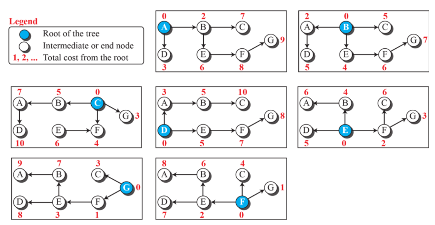
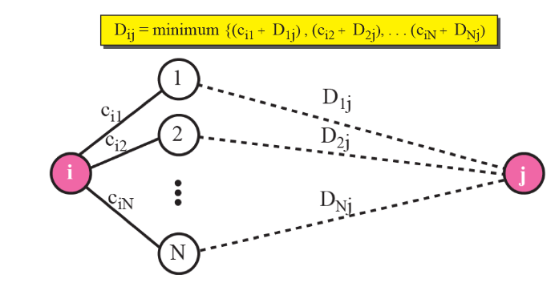
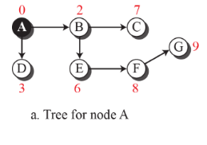
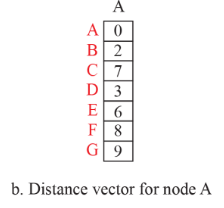
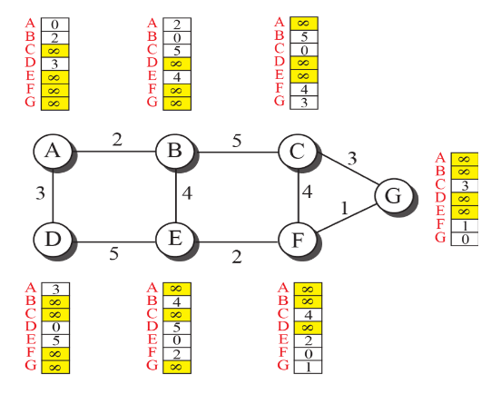
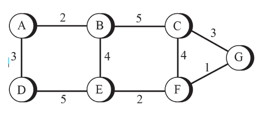

개념
- RIP 라우팅 프로토콜
-
RIP(거리 벡터 프로토콜)은 네트워크에서 사용되는 내부 게이트웨이 프로토콜(IGP) 중 하나로, 거리 벡터 알고리즘을 기반으로 작동합니다. RIP는 경로 선택 및 패킷 전달을 위해 사용되는 라우팅 테이블을 유지하고 업데이트하는 데 사용된다. RIP는 일반적으로 중소형 네트워크에서 사용되며, 네트워크의 라우팅 정보를 주기적으로 교환하고 최적의 경로를 결정하는 데 사용된다. RIP는 수많은 라우터에 의해 사용되는 경우에도 효과적이며, 이러한 이유로 많은 네트워크 관리자가 RIP를 선택한다.
최소 비용 라우팅
최소 비용 라우팅
최소 비용 트리-
루트로부터 다른 모든 노드들의 최소 비용으로 방문하는 트리이다. N개의 라우터가 있다면 각 라우터는 자신만의 최소비용 트리를 가진다. 루트와 다른 노드 사이의 가장 짧은 경로를 구하기 위해 모든 다른 노드들을 방문하는 트리이다 아래 그림은 위에 가중치 그래프에서 갖는 7개의 최소 비용 트리를 보여준다. 
- 라우팅 알고리즘
-
과거에 여러 라우팅 알고리즘들이 설계되었다. 이 방법들의 차이점은 최소비용과 각 노도에서 최소 비용 트리를 만드는 방법을 표현하는 방식이다.
거리-벡터 라우팅(DV, distance-vector)-
- 각 노도의 인접한 노드들의 정보를 이용하여 최소 비용 트리를 구한다.
- 불완전한 트리는 계속 완전한 트리가 되기위해 수정한다.
- 각 라우터들은 자신이 가지고 있는 인터넷 정보가 불완전해도 정보들을 주위 라우터들에게 끊임없이 알려준다. 불완전한 트리를 완전한 트리로 바꾸기 위해 내부적으로 사용하는 개념들이 있다.
벨만-포드 방정식-
거리 벡터 라우팅의 내부적으로 완전한 트리를 만들기 위해 사용되는 알고리즘이다. 간단하게 모든 경로 거리를 구해 최소값을 구하는 간단한 알고리즘이다.
벨만-포드 방정식은 다음과 같이 표현됩니다
D[v] = min { D[v], D[u] + w(u, v) }
여기서 각 기호와 용어는 다음과 같습니다
- D[v]: 시작 노드로부터 노드 v까지의 현재까지 계산된 최단 경로의 길이(distance).
- D[u]: 시작 노드로부터 노드 u까지의 현재까지 계산된 최단 경로의 길이.
- w(u, v): 노드 u에서 노드 v까지의 가중치(weight) 또는 거리(cost). 이것은 노드 u에서 v로 이동하는데 필요한 비용을 나타냅니다.
- min { D[v], D[u] + w(u, v) }: 현재까지 계산된 최단 경로 D[v]와 노드 u를 거쳐서 노드 v로 이동하는 경로 D[u] + w(u, v) 중에서 작은 값을 선택하여 D[v]를 업데이트합니다.

거리 벡터-
최소 비용 트리는 트리의 루트에서부터 모든 목적지까지의 최소 비용 경로 정보를 가지고 있다. 이 정보들을 일차원 배열로 저장한 것을 거리 벡터라고 한다. 각 라우터는 주변 노드와의 비용정보를 활용하여 거리 벡터를 생성한다. 처음 값을 모를 때는 무한대로 표시한다. 

거리 벡터 갱신-
불완전한 트리를 완전한 트리로 바꾸기 위해 거리 벡터를 계속 최저 비용으로 갱신해야한다.
- 모든 노드가 벡터를 만든 후 인접한 노드와 벡터 정보를 교환
- 이웃으로부터 벡터 정보를 수신한 노드는 벨만-포드 방정식을 이용하여 자신의 거리 벡터를 갱신 (최저 비용정보를 갱신)
- 백터가 갱신되면 자신의 모든 이웃에게 전달
- 전역적인 최소 비용을 찾을 수 있음
거리 벡터 라우팅의 단점-
비용 감소와 같은 소식은 빨리 퍼지나 비용 증가와 같은 안좋은 소식은 갱신이 느리다. Route poisoning : 특정 네트워크가 사용불가일 경우 인접 라우터에게 무한대와 같은 높은 비용 값을 전달하여 다운 상태를 알린다. 링크가 고장 난 경우에 다른 모든 라우터가 이를 인식해야 하는데, 거리 벡터 라우팅에서는 시간이 많이 소요된다. 무한대로의 카운트(count to infinity)라 불림.
무한대로의 카운트-
이 문제가 발생하는 여러 예시가 있다. 두 노드의 불안정성(two-node instability) 해결 방안 1 : 수평 분할(split horizon) 해결 방안 2 : 포이즌 리버스(poison reverse) 세 노드의 불안정성 세 노드 간에 불안정성이 발생하면 이 문제의 해결이 보장되지 않는다.
다이크스트라(Dijkstra) 알고리즘-
각 노드에서 최소 비용 트리를 생성하기 위한 알고리즘이다.
- 자기 자신을 루트로 선택하고 각 노드의 전체 비용을 계산
- 트리에 속하지 않은 모든 노드 중 루트와 가장 근접한 하나의 노드를 선택, 모든 트리 비용 계산
- 트리에 모든 노드가 추가될 때 까지 2단계 반복
가중치 그래프로 인터넷을 모델링할 때, 근원지 라우터부터 목적지 라우터까지의 최적 경로를 표현하는 방법 중 하나이다. 두 라우터 사이의 최소 비용(least cost)를 찾는 것이다. 위에 그림에서 A와 C의 최선 경로는 A-B-E라는 것을 알 수 있다. 각 라우터는 최소 비용 경로를 찾아 라우팅해야 한다. 
가중치 그래프로 인터넷을 모델링할 때, 근원지 라우터부터 목적지 라우터까지의 최적 경로를 표현하는 방법 중 하나이다. 두 라우터 사이의 최소 비용(least cost)를 찾는 것이다. 위에 그림에서 A와 C의 최선 경로는 A-B-E라는 것을 알 수 있다. 각 라우터는 최소 비용 경로를 찾아 라우팅해야 한다.